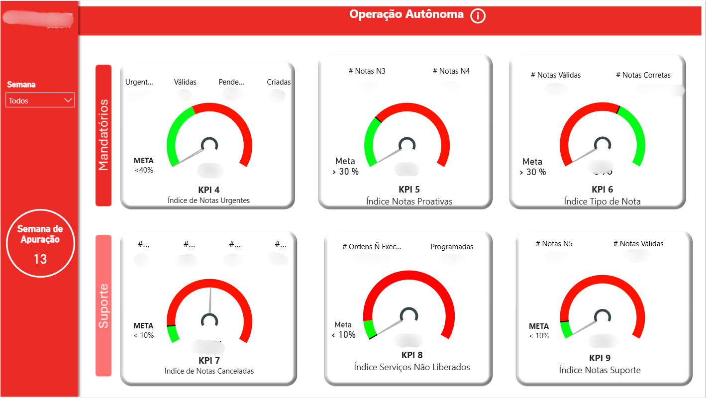
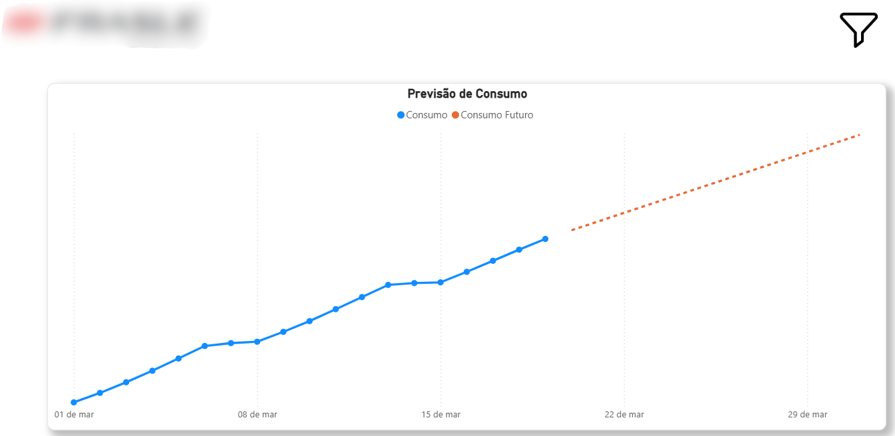
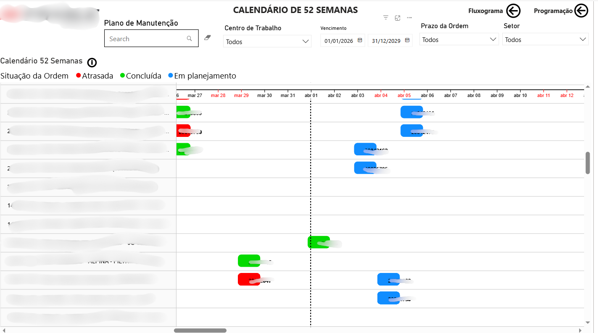
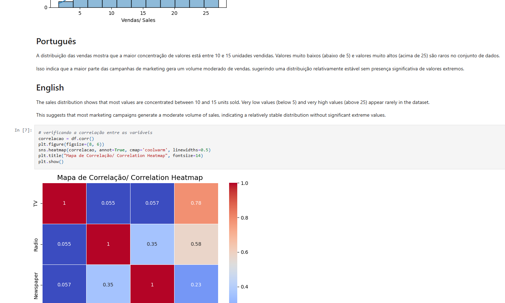
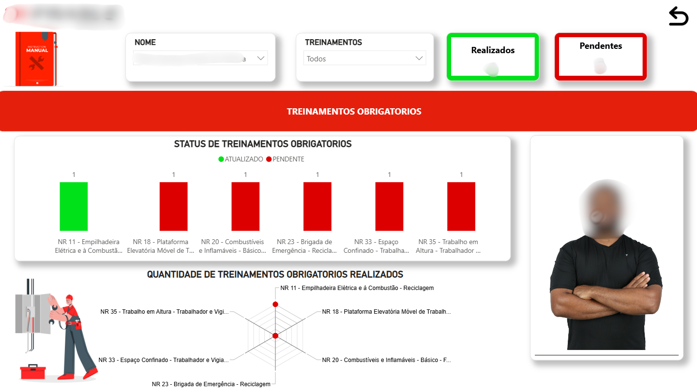
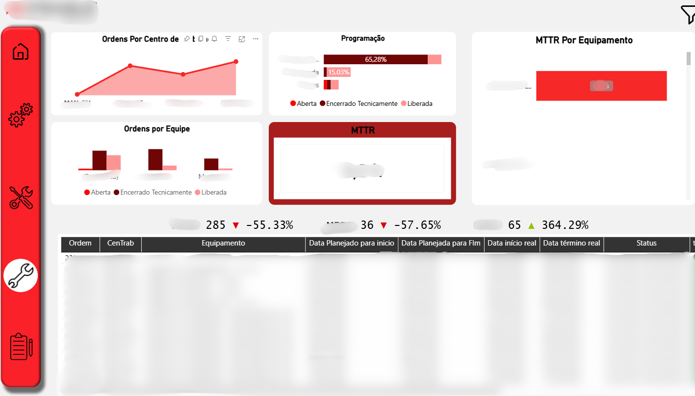
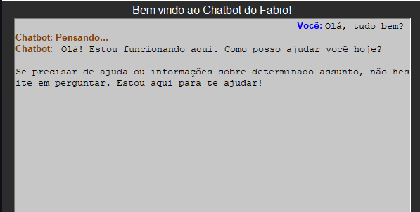

Sou estudante de Ciência de Dados para Negócios na FATEC Votorantim e estagiário de Análise de Dados na Frasle Mobility, empresa global do setor automotivo.
Em 6 meses, construí +4 produtos de BI em produção para públicos diferentes — da diretoria da planta aos planejadores do PCM — integrando dados do SAP com Python e Power BI.
Também desenvolvi um robô de extração automática de consumo de energia elétrica e um sistema de projeção linear que eliminou um processo manual recorrente.
Meu objetivo é atuar como Cientista de Dados em empresas de impacto, com foco em agronegócio, indústria e Setor bancário.
Do ambiente industrial à experimentação em ML — cada projeto resolve um problema real.

+20 páginas com KPIs operacionais (notas urgentes, proativas, canceladas, serviços liberados, Despesase e etc).

Robô em Python que extrai automaticamente o consumo de energia elétrica diário do portal da fornecedora, alimentando um BI com aba de projeção linear de consumo futuro.

Dashboard com calendário de agendamento de ordens de serviço integrado ao SAP, com status visual por cor. Usado diariamente pelos planejadores do PCM para controle do fluxo de manutenção.

Modelo de ML para prever vendas com base em investimentos em TV, rádio e jornal. Insight principal: rádio tem maior impacto por unidade investida que TV, mesmo com correlação menor.

BI com foto individual de cada manutentor e status de treinamentos obrigatórios (NRs), onde é possivel acompanhar o progresso de cada colaborador.

Dashboard para acompanhar ordens, notas e horas apontadas de cada manutentor.

ChatBot Desenvolvido com LangChain e Mistral Ollama, com interface grafica e respostas geradas por IA local
Stack focada em dados industriais, visualização e automação.
Estou aberto a oportunidades em análise de dados, BI e ciência de dados — especialmente no setor industrial e agronegócio.
Sou de Votorantim/SP e topo presencial, híbrido ou remoto. Também toparia me mudar para uma oportunidade certa.
Mandar e-mail →